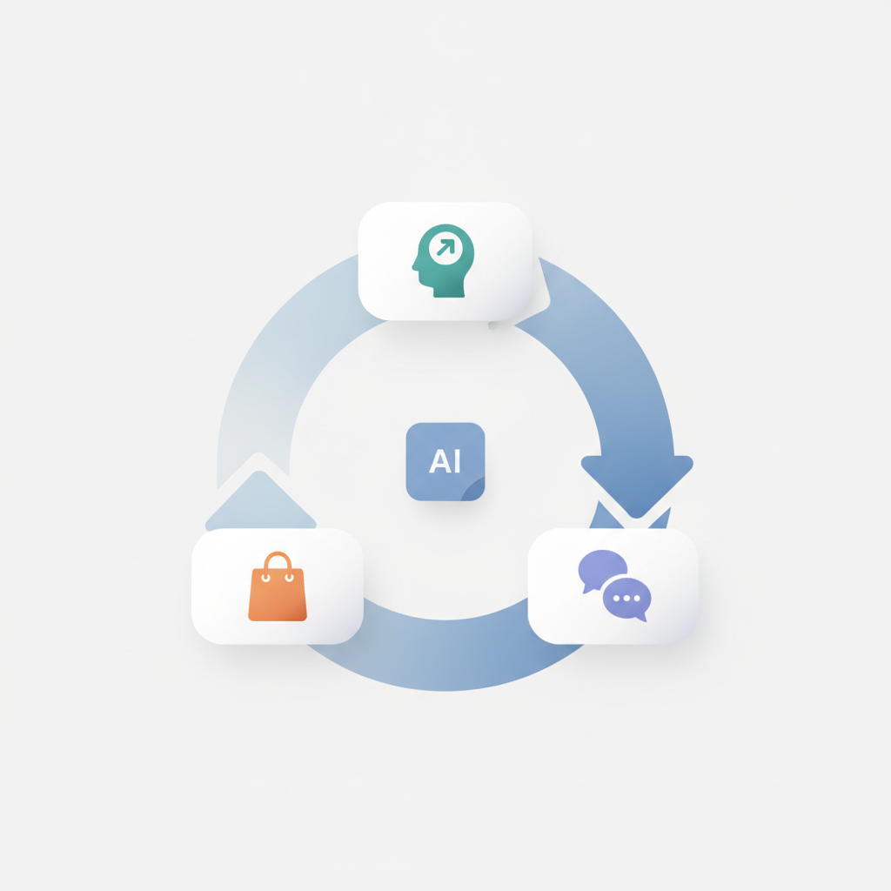
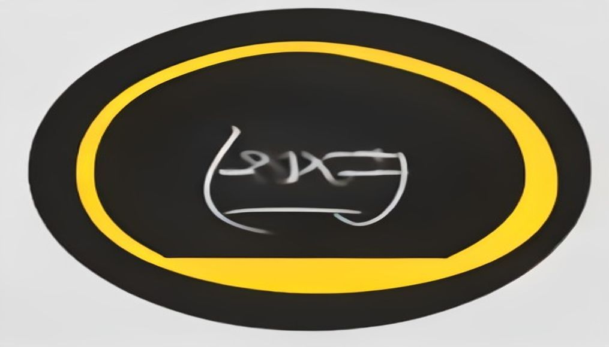
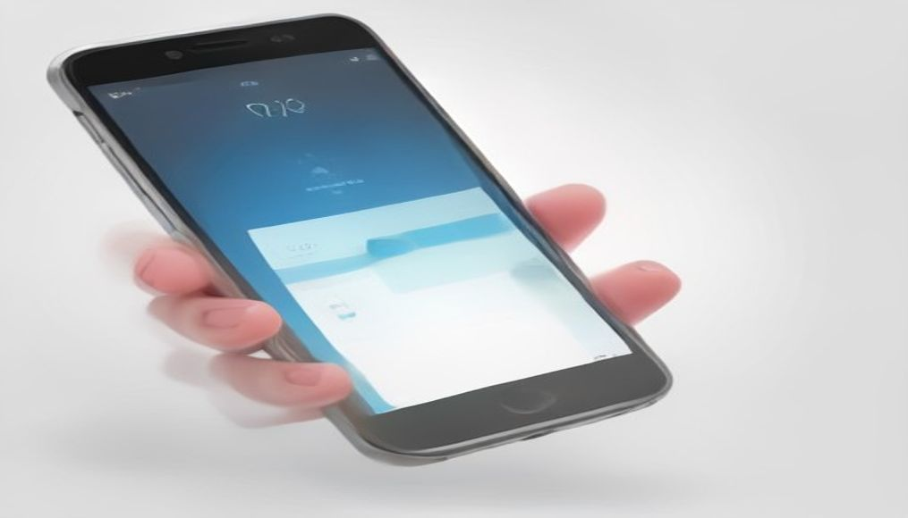
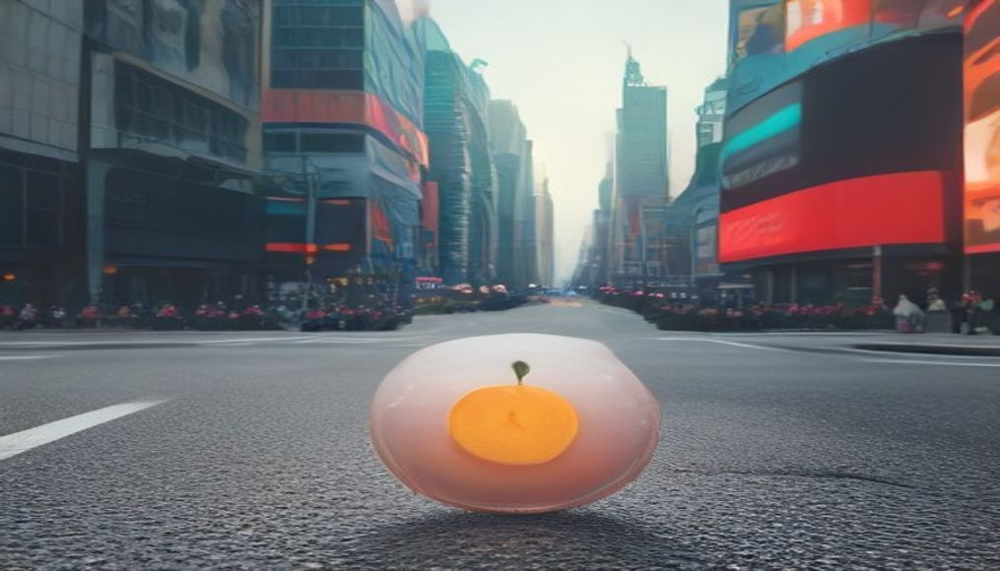

안녕하세요! 수요일 마케팅 소식 전해드립니다 😊 오늘은 버거킹의 기사식당 감성 캠페인이 단연 눈길을 끕니다. 아침 메뉴 판매 매장을 120개로 두 배 이상 늘리면서, 세련된 디지털 광고 대신 손글씨풍 간판과 노란 풍선 인형을 앞세운 옥외 물 마케팅을 선택했는데요. '진짜 아침밥집'의 투박한 감성이 오히려 브랜드 메시지를 더 선명하게 전달하는 전략으로 읽힙니다. 정교한 타기팅보다 날것의 맥락이 소비자의 공감을 먼저 끌어내는 사례로, 크리에이티브 기획 관점에서 챙겨두실 만합니다.
SNS에서 화제 중인 '마음자로' 콘텐츠도 흥미롭습니다. 비만 치료제 '마운자로'를 패러디해 실제 주사 없이 진동·화면 연출만으로 투약 경험을 재현하는 이 트렌드는, 기분과 심리 상태에도 가성비를 추구하는 소비자 심리를 드러냅니다. 브랜드 입장에서는 제품의 실질적 효능 못지않게 '경험의 감각'을 어떻게 설계하느냐가 구매 심리에 직접 영향을 미칠 수 있다는 점을 짚어주는 흐름입니다.
마케팅 뉴스에서는 D&AD의 경고도 함께 살펴볼 만합니다. AI가 반복 업무를 대체하면서 주니어가 직접 판단하고 실수하며 쌓아야 할 경험의 기회도 함께 줄어들고 있다는 내용인데, 도구의 효율만큼 사람의 성장 경로도 함께 설계해야 한다는 질문을 던집니다. 한 주의 중반, 오늘 하루도 좋은 인사이트 가득 챙기시길 바랍니다! 🚀
브랜드 리프트 측정 기업 온 디바이스가 광고업계 종사자 250여 명을 조사한 결과, 응답자의 80%가 자신의 캠페인이 성공하거나 실패한 이유를 완전히 이해하지 못한다고 답했다. 데이터의 양보다 캠페인 성과를 제대로 해석할 수 있는 측정의 질이 더 중요해지고 있다는 지적이다. 마케터들은 객관적 근거보다 주관적 판단에 의존하는 경향이 있어, 측정 체계와 인사이트 역량 강화가 시급한 과제로 부각된다.
›
2WARC와 틱톡이 발표한 보고서에 따르면, AI가 오디언스 타기팅까지 활용 영역을 넓히고 있지만 입력 데이터는 여전히 인구통계·구매이력 등 과거 데이터에 머물러 있다는 한계가 지적된다. 소비자가 실제로 원하는 것을 읽어내는 '인텔리전스 루프' 완성이 브랜드 간 격차를 만드는 핵심 요소로 부상하고 있다. 마케터는 나이·성별 같은 정적 데이터 대신 커뮤니티 행동 신호를 AI에 입력하는 방식으로 타기팅 전략을 고도화할 필요가 있다.
› 3글로벌 크리에이티비티 단체 D&AD가 발표한 'AI & Creativity Report 2026'은 AI가 반복 업무를 대체하면서 신입·주니어 일자리가 줄고, 이들이 판단력을 익힐 기회마저 사라지고 있다고 경고했다. 뛰어난 결과물을 가르는 결정적 요소는 여전히 인간의 판단력이라는 분석이다. 크리에이티브 조직은 AI 도입 효율화와 함께 주니어 인재의 판단력 육성 체계를 별도로 설계해야 한다는 시사점을 준다.
› 4글로벌 미디어 컨설팅사 ID Comms는 2027년 약 400억달러 규모의 대형 미디어 에이전시 피치가 시장에 쏟아질 것으로 전망했다. 새 에이전시를 찾기에 앞서 광고주가 자사의 미디어 업무 운영 모델부터 정비해야 한다는 조언이 함께 나왔다. 대규모 피치를 앞두고 마케터는 현재 미디어 운영 체계의 효율성과 투명성을 먼저 점검하는 것이 중요하다.
›
5버거킹이 아침 메뉴 판매 매장을 기존 58개에서 120개로 두 배 이상 확대하면서, 손글씨풍 간판과 노란 풍선 인형 등 기사식당 감성의 옥외 물을 활용한 마케팅을 선보였다. 패스트푸드 브랜드가 의도적으로 '낯선 맥락'을 연출해 소비자의 시선을 끌고 진정성 있는 이미지를 구축하는 전략이다. 고급·세련된 비주얼 대신 친숙한 로컬 감성을 전면에 내세우는 역발상 캠페인이 주목할 만한 사례다.
›
6SNS에서 비만 치료제 '마운자로'를 패러디한 '마음자로' 콘텐츠가 화제를 모으고 있다. 실제 주사가 아닌 진동·화면 연출로 투약 경험을 재현하며 '구라시보 효과로 식욕이 사라졌다'는 메시지를 전달하는 콘텐츠다. 실질적 효과 없이도 기분·경험 자체에 가치를 두는 소비 심리가 확산되고 있어, 마케터는 '감각적 만족'을 자극하는 콘텐츠 전략에 주목할 필요가 있다.
›
7'봉화사과 맛있지만 광고 안 합니다'라는 짧은 한글 문구를 담은 광고가 뉴욕 타임스스퀘어 전광판에 등장해 화제를 모았다. 봉화군 소속 20대 공무원이 광고비 전액을 사비로 부담한 사실이 알려지면서 SNS에서 빠르게 확산됐다. 진정성 있는 스토리와 역발상 메시지가 결합될 때 소규모 예산으로도 대형 바이럴 효과를 낼 수 있음을 보여주는 사례다.
›트위터 창업자 잭 도시가 만든 새 협업 앱, 먼저 써 본 개발자의 리뷰
브랜드 진단부터 지금 당장 해야 할 우선순위까지,
30분 무료 상담에서 함께 정리해드려요.
이미 수십 개 브랜드가 상담받았습니다.
내 브랜드처럼, 함께 고민하는 팀원의 마음으로 봅니다.
스타트업 대표·마케팅 담당자를 위한 30분